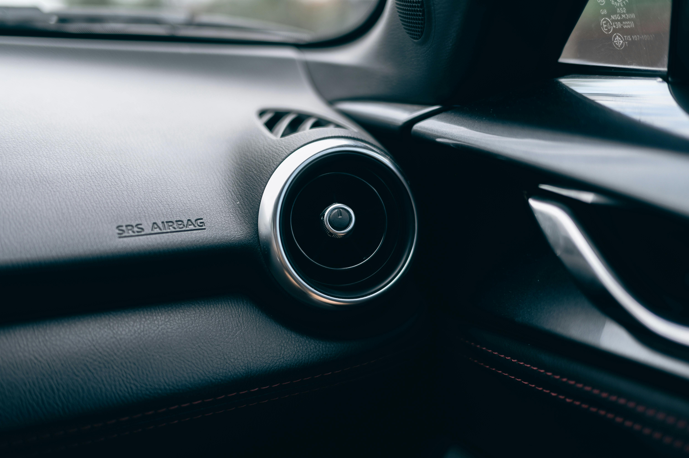

Heating & Air Conditioning
Stay comfortable through Iowa's 100-degree summers and sub-zero winters.
Auto HVAC Repair in Cedar Rapids
In Iowa, your car's heating and air conditioning aren't luxuries — they're necessities. When your AC stops blowing cold in July or your heater goes out in January, you need it fixed fast. Cedar Automotive provides complete automotive HVAC diagnostics and repair for all makes and models in Cedar Rapids and Eastern Iowa.
AC problems can range from a simple refrigerant recharge to a failed compressor or a leak in the system. We use professional refrigerant recovery and recharge equipment, perform leak detection with UV dye, and test system pressures to identify the root cause. We don't just top off your refrigerant and send you on your way — we find out why it's low in the first place.
For heating issues, we diagnose heater core problems, blend door actuator failures, thermostat malfunctions, and blower motor issues. European vehicles with dual-zone and multi-zone climate control systems require specialized diagnostics — and we have the tools to handle them.
HVAC Services We Provide
- AC performance check and refrigerant recharge
- AC compressor repair and replacement
- Condenser and evaporator service
- Refrigerant leak detection (UV dye test)
- Heater core repair and replacement
- Thermostat replacement
- Blower motor and resistor repair
- Blend door actuator replacement
- Cabin air filter replacement
- Climate control module diagnostics

Why Cedar Automotive for HVAC Repair?
Iowa Climate Experts
We understand what Iowa weather does to your HVAC system — from summer heat to winter freeze.
Find the Real Problem
We don't just recharge and hope. We test pressures, check for leaks, and find the root cause.
All Climate Systems
Single zone, dual zone, rear AC — domestic and European vehicles. We handle them all.
Related Services
Frequently Asked Questions
Why is my car's AC blowing warm air?
Common causes include low refrigerant from a leak, a failing compressor, a clogged condenser, or a broken blend door actuator. We diagnose the exact cause before recommending repairs so you're not paying for parts you don't need.
How often should car AC be recharged?
AC systems shouldn't lose refrigerant under normal conditions — if yours needs a recharge, there's likely a leak. We find and fix the leak first, then recharge the system for a lasting repair.
Can you fix heater problems too?
Yes — we handle heater core replacement, blower motor repair, thermostat issues, and blend door actuator problems. Iowa winters demand a working heater, and we'll get yours working right.